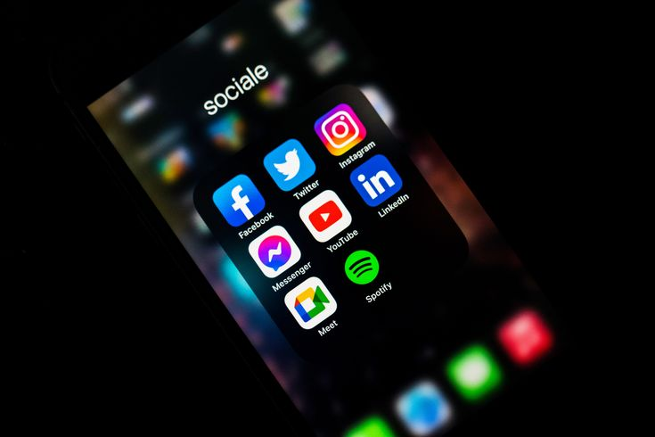

Social Media Projects
Proyek kampanye media sosial, pembuatan konten, dan analitik performa. Termasuk strategi konten, kalender posting, dan optimasi KPI.

Kampanye Peluncuran Produk
Merancang strategi konten dan menjalankan kampanye Instagram & TikTok untuk peluncuran produk lokal. Hasil: peningkatan engagement 45% selama 4 minggu.
Tanggung Jawab: Strategi konten, pembuatan kreatif, analisis performa.

Manajemen Akun & Growth
Pengelolaan akun bisnis dengan kalender konten, optimasi hashtag, dan A/B testing konten. Fokus pada peningkatan follower organik dan konversi.
Tools: Canva, Meta Business Suite, Google Analytics

Konten Edukatif & Visual
Pembuatan materi visual untuk edukasi pengguna, termasuk infografis dan micro-videos. Konten dioptimasi untuk shareability dan retention.
Peran: Desain konten, scripting, editing video.